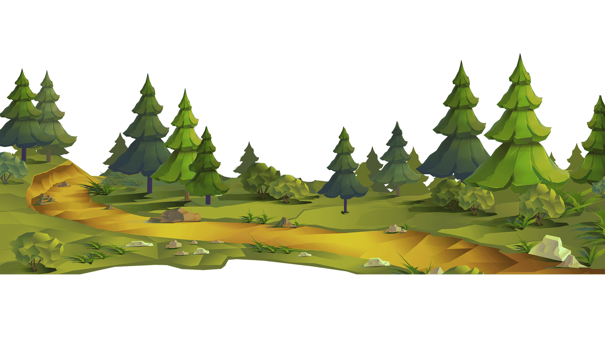
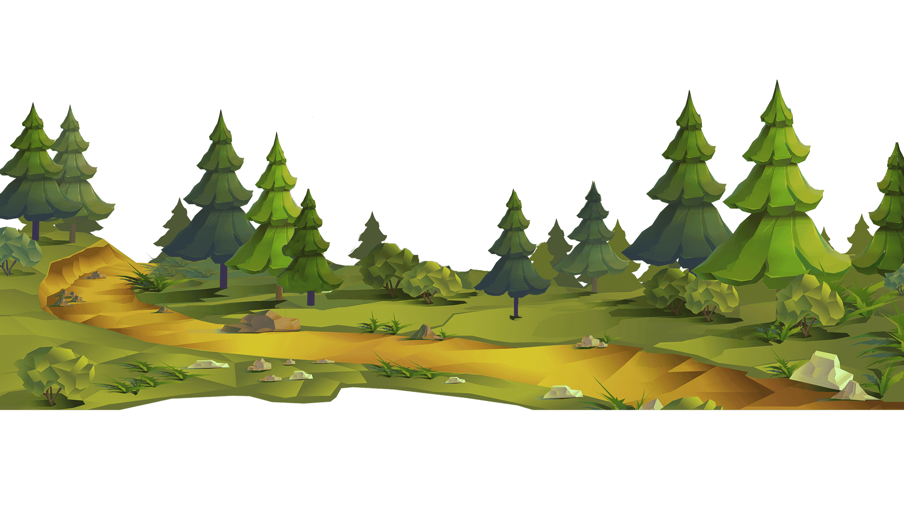
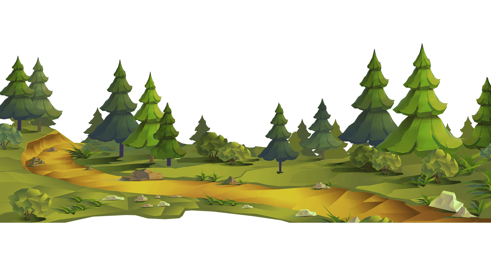
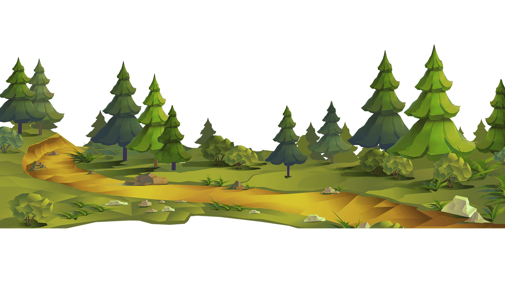

 Explore
Explore


 
Explore

Explore


The headings and sample content clearly outline the core structure and objectives of the PACE Educational
Kit project. Under the "Project Goals and Objectives" heading, the project aims to provide students with
knowledge about ocean science, atmospheric processes, and climate change. Additionally, it emphasizes
increasing ocean literacy by presenting the data collected by the PACE satellite in a way that students
can understand, while also aiming to develop scientific thinking skills and foster environmentally
conscious individuals. These goals highlight the project's mission to create scientific awareness
in education and nurture environmentally
responsible individuals.
The "Target Audience" heading clearly states the scope of the educational kit and who it is intended for.
The materials are designed for elementary (grades 3-5), middle (grades 6-8), and high school (grades 9-12)
students, indicating that the project aims to reach a broad student audience. Furthermore, the inclusion
of resources for teachers and educators supports the effective use of the project within the educational
system.
Under the heading "Content of the Education Set," the topics covered in the set and how its sections are structured are detailed. The levels A0, A1, and A2 provide content appropriate to students' age and knowledge levels. For example, the A0 level includes basic ocean knowledge and simple experiments, while the A2 level covers more advanced topics such as the electromagnetic spectrum and the carbon cycle. This structure ensures that students can learn according to their knowledge level and gain a deeper understanding of the subjects.
In conclusion, the analysis and evaluation of the headings demonstrate that the PACE Education Set is a well-structured project, designed to effectively achieve its educational goals. The detailed explanations under these headings will further enhance the project's value and contributions, enabling users (teachers, students, and educators) to utilize the project effectively.
Overall, these headings strongly reflect the project's purpose, target audience, content structure, and scientific foundation. The detailed breakdown of the education set across different levels ensures that it meets the needs of students of all age groups. Additionally, the integration of the PACE mission into education offers students practical insights into how scientific data is collected and utilized.
In conclusion, the analysis and evaluation of the headings demonstrate that the PACE Education Set is a well-structured project, designed to effectively achieve its educational goals. The detailed explanations under these headings will further enhance the project's value and contr ibutions, enabling users (teachers, students, and educators) to utilize the project effectively.